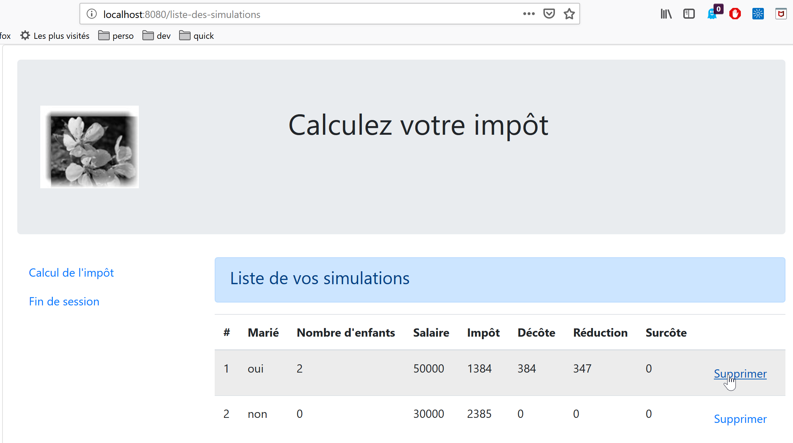
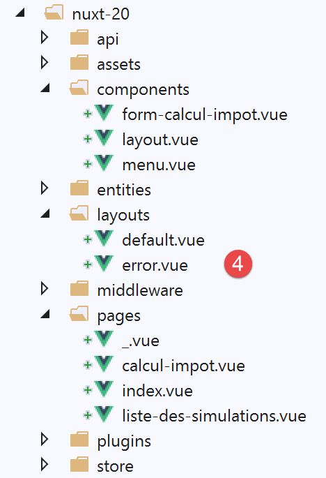
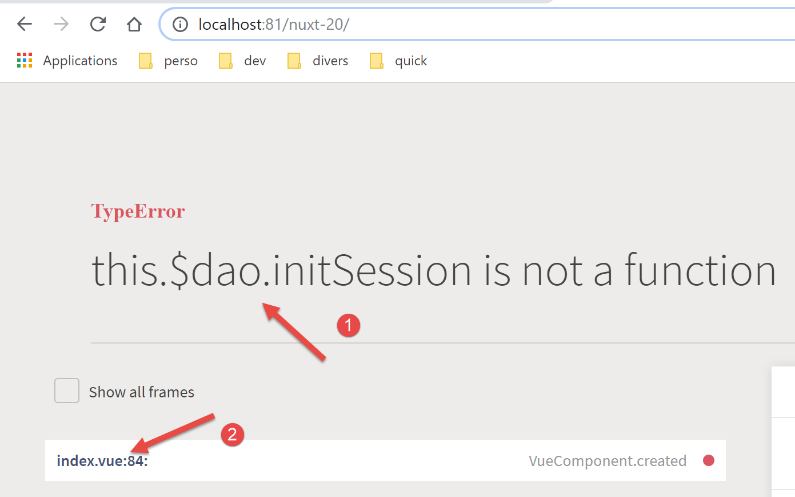
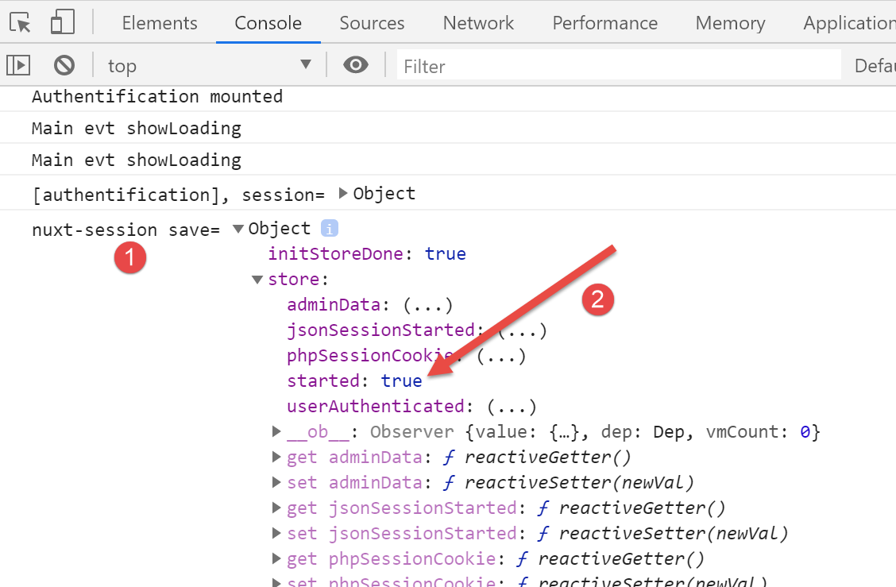
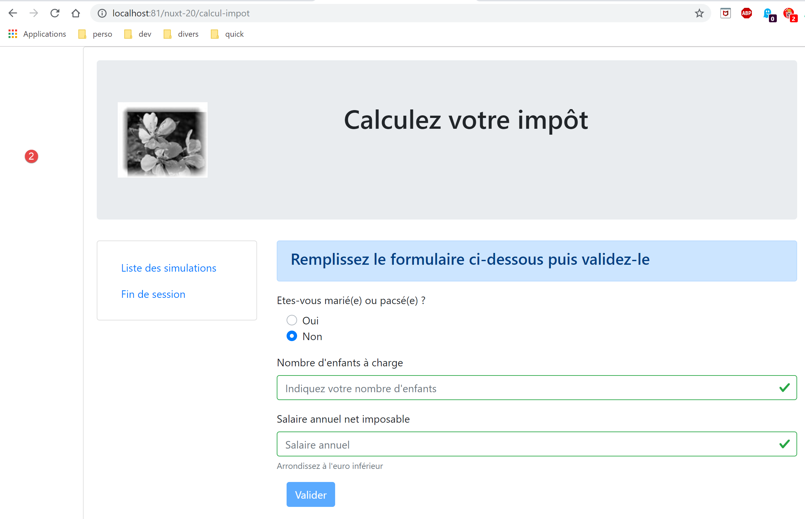
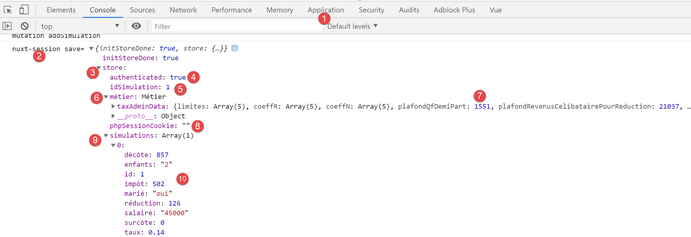
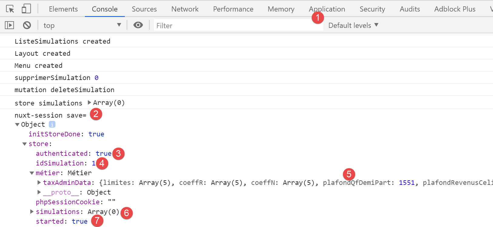
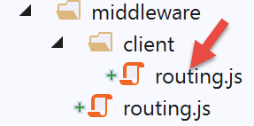

17. Ejemplo [nuxt-20]: adaptación del ejemplo [vuejs-22]
17.1. Présentation
Aquí nos proponemos adaptar el ejemplo [vuejs-22], que era una aplicación [vue.js] de tipo SPA, a un contexto [nuxt] SSR. [vuejs-22] era una aplicación cliente del servidor de cálculo de impuestos que presentaba las siguientes vistas:
La primera vista es la de autenticación:

La segunda vista es la del cálculo de impuestos:

La tercera vista es la que muestra la lista de simulaciones realizadas por el usuario:

La pantalla anterior muestra que se puede eliminar la simulación n.º 1. A continuación, aparece la siguiente vista:

Si ahora eliminamos la última simulación, se obtiene la siguiente vista:

Vamos a migrar la aplicación [vuejs-22] a la aplicación [nuxt-20] de forma progresiva. No volveremos a explicar los códigos de [vuejs-22]. Se recomienda al lector que vuelva a leer el documento |Introducción al marco VUE.JS a través de un ejemplo|. Los distintos pasos deberían mostrar las diferencias entre una aplicación [vuejs] y una aplicación [nuxt].
17.2. Paso 1
El proyecto [nuxt-20] se obtiene inicialmente copiando el proyecto [nuxt-12]. Este último es, de hecho, un buen punto de partida:
- sabe comunicarse con el servidor de cálculo de impuestos;
- gestiona correctamente los errores que este envía;
- el cliente y el servidor [nuxt] se comunican a través de una sesión [nuxt];
Así pues, contamos con una buena infraestructura inicial. Nuestra tarea principal debería consistir en modificar:
- las páginas. Tomaremos las del proyecto [vuejs-22], que habrá que adaptar al nuevo entorno;
- la gestión del almacén. Debería aparecer información adicional (lista de simulaciones) y otra podría resultar innecesaria;
- la gestión del enrutamiento del cliente y del servidor [nuxt];
Así pues, en primer lugar, creamos el proyecto [nuxt-20] copiando el proyecto [nuxt-12]:

A continuación, se eliminan las páginas y los componentes que ya no son necesarios [2]:
- el componente [components/navigation] desaparece;
- el diseño [layout/default] desaparece;
- las páginas [index, authentification, get-admindata, fin-session] desaparecen;
A continuación, se integran en [nuxt-20] elementos de [vuejs-22] y [3]:
- las tres páginas [Authentification, CalculImpot, ListeSimulations] de la aplicación [vuejs-22] se trasladan a la carpeta [pages];
- los componentes [FormCalculImpot, Menu, Layout] de la aplicación [vuejs-22] se guardan en la carpeta [components];
- la página [Main] de [vuejs-22], que servía como [layout] para la aplicación [vuejs-22], se traslada a la carpeta [layouts];
Se renombran los elementos integrados [4]:

- en [layouts], [Main] pasó a ser [default], ya que es el nombre por defecto del diseño de una aplicación [nuxt];
- en [pages], la página [Authentification] ha pasado a ser [index], ya que [Authentification] desempeñaba esa función en la aplicación [vuejs-22];
Llegados a este punto, podemos compilar el proyecto para ver los primeros errores. Modificamos el archivo [nuxt.config] del ejemplo [nuxt-12] para que, a partir de ahora, se ejecute [nuxt-20]:
export default {
mode: 'universal',
/*
** Headers of the page
*/
head: {
title: 'Introduction à [nuxt.js]',
meta: [
{ charset: 'utf-8' },
{ name: 'viewport', content: 'width=device-width, initial-scale=1' },
{
hid: 'description',
name: 'description',
content: 'ssr routing loading asyncdata middleware plugins store'
}
],
link: [{ rel: 'icon', type: 'image/x-icon', href: '/favicon.ico' }]
},
/*
** Customize the progress-bar color
*/
loading: false,
/*
** Global CSS
*/
css: [],
/*
** Plugins to load before mounting the App
*/
plugins: [
{ src: '@/plugins/client/plgSession', mode: 'client' },
{ src: '@/plugins/server/plgSession', mode: 'server' },
{ src: '@/plugins/client/plgDao', mode: 'client' },
{ src: '@/plugins/server/plgDao', mode: 'server' },
{ src: '@/plugins/client/plgEventBus', mode: 'client' }
],
/*
** Nuxt.js dev-modules
*/
buildModules: [
// Doc: https://github.com/nuxt-community/eslint-module
'@nuxtjs/eslint-module'
],
/*
** Nuxt.js modules
*/
modules: [
// Doc: https://bootstrap-vue.js.org
'bootstrap-vue/nuxt',
// Doc: https://axios.nuxtjs.org/usage
'@nuxtjs/axios',
// https://www.npmjs.com/package/cookie-universal-nuxt
'cookie-universal-nuxt'
],
/*
** Axios module configuration
** See https://axios.nuxtjs.org/options
*/
axios: {},
/*
** Build configuration
*/
build: {
/*
** You can extend webpack config here
*/
extend(config, ctx) {}
},
// directorio del código fuente
srcDir: 'nuxt-20',
// enrutador
router: {
// raíz de los URL de la aplicación
base: '/nuxt-20/',
// middleware de enrutamiento
middleware: ['routing']
},
// servidor
server: {
// puerto de servicio, 3000 por defecto
port: 81,
// direcciones de red a las que se escucha, por defecto localhost: 127.0.0.1
// 0.0.0.0 = todas las direcciones de red del equipo
host: 'localhost'
},
// entorno
env: {
// configuración de Axios
timeout: 2000,
withCredentials: true,
baseURL: 'http://«localhost/php7/scripts-web/impots/version-14»,
// configuración de la cookie de sesión [nuxt]
maxAge: 60 * 5
}
}
A continuación, se genera un [build] del proyecto:

Los errores detectados son los siguientes:
- el error de la línea 1 indica que se hace referencia a una imagen inexistente. La recuperaremos en [vuejs-22];
- el error de la línea 2 muestra que el componente [./FormCalculImpot] no existe. Efectivamente, este componente se encuentra ahora en [@/components/form-calcul-impot];
- los errores de las líneas [3-5] indican que el componente [./Layout] no existe. Efectivamente, este componente se encuentra ahora en [@/components/layout];
- los errores de las líneas [6-7] indican que el componente [./Menu] no existe. Efectivamente, ahora se llama [@/components/menu];
Añadimos la imagen [assets/logo.jpg] al proyecto [nuxt-20]:

Por otra parte, en todas las páginas corregiremos la ruta de los componentes. Tomemos como ejemplo la página [calcul-impot]:
<!-- definición HTML de la vista -->
<template>
<div>
<Layout :left="true" :right="true">
<!-- formulario de cálculo de impuestos a la derecha -->
<FormCalculImpot slot="right" @resultatObtenu="handleResultatObtenu" />
<!-- menú de navegación a la izquierda -->
<Menu slot="left" :options="options" />
</Layout>
<!-- Área de visualización de los resultados del cálculo del impuesto debajo del formulario -->
<b-row v-if="résultatObtenu" class="mt-3">
<!-- área vacía de tres columnas -->
<b-col sm="3" />
<!-- área de nueve columnas -->
<b-col sm="9">
<b-alert show variant="success">
<span v-html="résultat"></span>
</b-alert>
</b-col>
</b-row>
</div>
</template>
<script>
// importaciones
import FormCalculImpot from './FormCalculImpot'
import Menu from './Menu'
import Layout from './Layout'
export default {
// componentes utilizados
components: {
Layout,
FormCalculImpot,
Menu
},
Los tres [import] de las líneas 26-28 pasan a ser:
// importaciones
import FormCalculImpot from '@/components/form-calcul-impot'
import Menu from '@/components/menu'
import Layout from '@/components/layout'
De este modo, se comprueban y, en su caso, se corrigen los [import] de todos los componentes, diseños y páginas. Una vez realizadas estas correcciones, se puede intentar ejecutar de nuevo el [build]. Normalmente, ya no debería haber errores.
A continuación, se puede intentar una ejecución:

Aparecen errores:
Se observa que el comando [dev], combinado con el módulo [eslint], es más estricto, a nivel sintáctico, que el comando [build]. En este caso, exige que el operador de comparación [!=] se escriba como [!==], que es un operador más estricto (también comprueba el tipo de los operandos). Estos errores se producen en la página [index.vue].
Corregimos los errores anteriores y volvemos a ejecutar el proyecto. Entonces aparece una advertencia del módulo [eslint]:

Corregimos este error con el módulo [Quick fix] del módulo [eslint] [2].
Se vuelve a ejecutar el proyecto. Ya no hay ningún error de compilación. A continuación, se solicita el archivo URL y [http://localhost:81/nuxt-20/] con un navegador. Se produce un error de ejecución:

El error se encuentra en [index.vue] [2]. El error [1] se debe a que, en [vuejs-22], la capa [dao] estaba disponible en [this.$dao], mientras que en [nuxt-12], cuya infraestructura hemos adoptado, está disponible en la función [this.$dao()].
El error se encuentra en la función [created] del ciclo de vida de la página [index]:

Por el momento, nos limitamos a cambiar el nombre de [created] a [created2] para que no se ejecute la función del ciclo de vida [created] [3].
Guardamos el cambio y volvemos a cargar la página [index] en el navegador. Esta vez ya está bien:

17.3. paso 2
Las páginas del proyecto [vuejs-22] utilizaban los siguientes elementos inyectados:
- $dao: para la capa [dao] del cliente [vue.js];
- $session: para una sesión almacenada en el [localStorage] del navegador;
Estos elementos ya no existen en la infraestructura del proyecto [nuxt-12] que hemos copiado:
- ahora hay dos capas [dao], una para el cliente [nuxt] y otra para el servidor [nuxt]. Ambas están disponibles a través de una función inyectada denominada [$dao]. Esto significa que, en las páginas de la aplicación, [this.$dao] debe sustituirse por [this.$dao()];
- la sesión [nuxt] gestionada por la aplicación [nuxt-20] ya no tiene nada que ver con el objeto [$session] de laaplicación [vuejs-22], en la que no existía el concepto de cookie de sesión. No obstante, ambas tienen una funcionalidad similar: almacenar información persistente a lo largo de las acciones del usuario. La sesión [nuxt] almacena la información en el almacén en lugar de hacerlo directamente en la sesión. En las páginas de la aplicación, [this.$session] debe sustituirse por [this.$store] cuando se trate de almacenar información en la sesión y por [this.$session()] cuando se trate de manipular la propia sesión;
- para conocer el estado de una propiedad P del almacén, habrá que escribir [this.$store.state.P];
- para modificar la propiedad P del almacén, habrá que escribir [this.$store.commit(‘replace’, {P:value}];
Realizamos estos cambios en la página [index]:
<!-- definición HTML de la vista -->
<template>
<Layout :left="false" :right="true">
<template slot="right">
<!-- formulario HTML: los valores se envían mediante la acción [authentifier-utilisateur] -->
<b-form @submit.prevent="login">
<!-- título -->
<b-alert show variant="primary">
<h4>Bienvenue. Veuillez vous authentifier pour vous connecter</h4>
</b-alert>
<!-- Primera línea -->
<b-form-group label="Nom d'utilisateur" label-for="user" label-cols="3">
<!-- campo de introducción de usuario -->
<b-col cols="6">
<b-form-input id="user" v-model="user" type="text" placeholder="Nom d'utilisateur" />
</b-col>
</b-form-group>
<!-- segunda línea -->
<b-form-group label="Mot de passe" label-for="password" label-cols="3">
<!-- campo de introducción de contraseña -->
<b-col cols="6">
<b-input id="password" v-model="password" type="password" placeholder="Mot de passe" />
</b-col>
</b-form-group>
<!-- tercera línea -->
<b-alert v-if="showError" show variant="danger" class="mt-3">L'erreur suivante s'est produite : {{ message }}</b-alert>
<!-- botón de tipo [submit] en una tercera línea -->
<b-row>
<b-col cols="2">
<b-button :disabled="!valid" variant="primary" type="submit">Valider</b-button>
</b-col>
</b-row>
</b-form>
</template>
</Layout>
</template>
<!-- dinámica de la vista -->
<script>
/* eslint-disable no-console */
import Layout from '@/components/layout'
export default {
// componentes utilizados
components: {
Layout
},
// estado del componente
data() {
return {
// usuario
user: '',
// su contraseña
password: '',
// controla la visualización de un mensaje de error
showError: false,
// el mensaje de error
message: ''
}
},
// propiedades calculadas
computed: {
// entradas válidas
valid() {
return this.user && this.password && this.$store.state.started
}
},
// ciclo de vida: el componente acaba de crearse
mounted() {
// eslint-disable-next-line
console.log("Authentification mounted");
// ¿Puede el usuario realizar simulaciones?
if (this.$store.state.started && this.$store.state.authenticated && this.$métier.taxAdminData) {
// entonces el usuario puede realizar simulaciones
this.$router.push({ name: 'calculImpot' })
// Vuelta al bucle de eventos
return
}
// si la sesión jSON ya se ha iniciado, no se vuelve a iniciar
if (!this.$store.state.started) {
// comienzo de la espera
this.$emit('loading', true)
// se inicializa la sesión con el servidor: solicitud asíncrona
// se utiliza la promesa devuelta por los métodos de la capa [dao]
this.$dao()
// se inicializa una sesión jSON
.initSession()
// se ha obtenido la respuesta
.then((response) => {
// fin de la espera
this.$emit('loading', false)
// análisis de la respuesta
if (response.état !== 700) {
// se muestra el error
this.message = response.réponse
this.showError = true
// vuelta al bucle de eventos
return
}
// la sesión se ha iniciado
this.$store.commit('replace', { started: true })
console.log('[authentification], session=', this.$session())
})
// en caso de error
.catch((error) => {
// se remite el error a la vista [Main]
this.$emit('error', error)
})
// en todos los casos
.finally(() => {
// se guarda la sesión
this.$session().save()
})
}
},
// gestores de eventos
methods: {
// ----------- autenticación
async login() {
try {
// Inicio de la espera
this.$emit('loading', true)
// aún no se ha autenticado
this.$store.commit('replace', { authenticated: false })
// autenticación bloqueante en el servidor
const response = await this.$dao().authentifierUtilisateur(this.user, this.password)
// fin de la carga
this.$emit('loading', false)
// análisis de la respuesta del servidor
if (response.état !== 200) {
// se muestra el error
this.message = response.réponse
this.showError = true
// vuelta al bucle de eventos
return
}
// sin error
this.showError = false
// se ha autenticado
this.$store.commit('replace', { authenticated: true })
// --------- ahora se solicitan los datos de la administración tributaria
// al principio, no hay datos
this.$métier.setTaxAdminData(null)
// Inicio de la espera
this.$emit('loading', true)
// solicitud bloqueada en el servidor
const response2 = await this.$dao().getAdminData()
// fin de la carga
this.$emit('loading', false)
// análisis de la respuesta
if (response2.état !== 1000) {
// se muestra el error
this.message = response2.réponse
this.showError = true
// vuelta al bucle de eventos
return
}
// sin error
this.showError = false
// se almacena el dato recibido en la capa [métier]
this.$métier.setTaxAdminData(response2.réponse)
// se puede pasar al cálculo del impuesto
this.$router.push({ name: 'calculImpot' })
} catch (error) {
// se remite el error al componente principal
this.$emit('error', error)
} finally {
// actualización del almacén
this.$store.commit('replace', { métier: this.$métier })
// se guarda la sesión
this.$session().save()
}
}
}
}
</script>
Cabe destacar los siguientes puntos:
- línea 69: la función [created2] ha pasado a llamarse [mounted], para que el servidor [nuxt] no la ejecute (este no ejecuta ni [beforeMount] ni [mounted]). Solo el cliente [nuxt] lo ejecutará, tal y como ocurría con el ejemplo [vuejs-22];
- línea 73: se hace referencia a [this.$métier], que por el momento no existe;
- línea 75: nunca hemos utilizado este método en una aplicación [nuxt]. Habrá que comprobar si funciona en un contexto [nuxt];
- líneas 112 y 172: en [vuejs-22], la sesión del proyecto se guardaba de esta forma. Con el proyecto [nuxt-20], el método [save] debe recibir el contexto actual. Se sabe que, en una página [nuxt], el objeto [context] está disponible en [this.$nuxt.context];
Por lo tanto, las líneas 112 y 172 se reescriben de la siguiente manera:
this.$session().save(this.$nuxt.context)
Cabe señalar que este código no está optimizado. En lugar de utilizar varias veces la función [this.$session()], sería preferible escribir:
const session=this.$session()
y, a continuación, utilizar la variable [session]. Se puede aplicar el mismo razonamiento a la función [this.$dao()].
Una vez realizadas estas correcciones, podemos volver a cargar URL y [http://localhost:81/nuxt-20/] en un navegador. Seguimos obteniendo la misma página que antes:

Echemos un vistazo a los registros del navegador:

El registro [1] es el último registro realizado por el cliente [nuxt]. En [2], se observa que la propiedad [started] está en [vrai], lo que significa que la función [mounted] ha conseguido iniciar una sesión jSON con el servidor de cálculo de impuestos. También se observa que el almacén tiene propiedades que habrá que eliminar o renombrar. Recordemos que estamos utilizando el almacén del ejemplo [nuxt-12].
Ahora volvamos a solicitar el URL [http://localhost:81/nuxt-20/] mientras el servidor de cálculo de impuestos no está en marcha. En primer lugar, nos aseguramos de eliminar la cookie de la sesión [nuxt]:

La captura de pantalla anterior corresponde a Chrome. Una vez hecho esto, al introducir URL [http://localhost:81/nuxt-20/] se obtiene el siguiente resultado:

El error se gestionó correctamente en el proyecto [vuejs-22]. Sigue gestionándose correctamente en el proyecto [nuxt-20].
17.4. Paso 3
Ahora que tenemos la página de autenticación, hay que fijarse en el código que se ejecuta cuando el usuario hace clic en el botón [Valider]:
// gestores de eventos
methods: {
// ----------- autenticación
async login() {
try {
// Inicio de la espera
this.$emit('loading', true)
// Aún no se ha autenticado
this.$store.commit('replace', { authenticated: false })
// autenticación bloqueante en el servidor
const response = await this.$dao().authentifierUtilisateur(this.user, this.password)
// fin de la carga
this.$emit('loading', false)
// análisis de la respuesta del servidor
if (response.état !== 200) {
// se muestra el error
this.message = response.réponse
this.showError = true
// vuelta al bucle de eventos
return
}
// sin error
this.showError = false
// se ha autenticado
this.$store.commit('replace', { authenticated: true })
// --------- ahora se solicitan los datos de la administración tributaria
// al principio, no hay datos
this.$métier.setTaxAdminData(null)
// Inicio de la espera
this.$emit('loading', true)
// solicitud bloqueada en el servidor
const response2 = await this.$dao().getAdminData()
// fin de la carga
this.$emit('loading', false)
// análisis de la respuesta
if (response2.état !== 1000) {
// se muestra el error
this.message = response2.réponse
this.showError = true
// vuelta al bucle de eventos
return
}
// sin error
this.showError = false
// se almacena el dato recibido en la capa [métier]
this.$métier.setTaxAdminData(response2.réponse)
// se puede pasar al cálculo del impuesto
this.$router.push({ name: 'calculImpot' })
} catch (error) {
// se remite el error al componente principal
this.$emit('error', error)
} finally {
// actualización del almacén
this.$store.commit('replace', { métier: this.$métier })
// se guarda la sesión
this.$session().save(this.$nuxt.context)
}
}
}
El principal problema aquí parece ser la ausencia del dato [this.$métier]. Para solucionarlo, vamos a:
- incluir la clase [Métier] del ejemplo [vuejs-22]. La colocaremos en la carpeta [api];
- insertar una función [$métier] en el contexto del cliente [nuxt] que dará acceso a esta clase;
En primer lugar, copiaremos la clase [Métier] en la carpeta [api]:

Una vez que la clase [Métier] se encuentra en el proyecto, se crea un nuevo complemento para el cliente [nuxt]. Este complemento, denominado [pluginMétier], inyectará una función [$métier] que dará acceso a la clase [Métier]:
/* eslint-disable no-console */
// se crea un punto de acceso a la capa [métier]
import Métier from '@/api/client/Métier'
export default (context, inject) => {
// instanciación de la capa [métier]
const métier = new Métier()
// Inyección de una función [$métier] en el contexto
inject('métier', () => métier)
// registro
console.log('[fonction client $métier créée]')
}
Una vez hecho esto, podemos corregir la página [index]:
// ciclo de vida: el componente acaba de crearse
mounted() {
// eslint-disable-next-line
console.log("Authentification mounted");
// ¿Puede el usuario realizar simulaciones?
if (this.$store.state.started && this.$store.state.authenticated && this.$métier().taxAdminData) {
// entonces el usuario puede realizar simulaciones
this.$router.push({ name: 'calcul-impot' })
// Vuelta al bucle de eventos
return
}
// si la sesión jSON ya se ha iniciado, no se vuelve a iniciar
...
},
// gestores de eventos
methods: {
// ----------- autenticación
async login() {
try {
// Inicio de la espera
this.$emit('loading', true)
// Aún no se ha autenticado
this.$store.commit('replace', { authenticated: false })
// autenticación bloqueante en el servidor
const response = await this.$dao().authentifierUtilisateur(this.user, this.password)
// fin de la carga
this.$emit('loading', false)
// análisis de la respuesta del servidor
if (response.état !== 200) {
// se muestra el error
this.message = response.réponse
this.showError = true
// vuelta al bucle de eventos
return
}
// sin error
this.showError = false
// se ha autenticado
this.$store.commit('replace', { authenticated: true })
// --------- ahora se solicitan los datos de la administración tributaria
// al principio, no hay datos
this.$métier().setTaxAdminData(null)
// Inicio de la espera
this.$emit('loading', true)
// solicitud bloqueada en el servidor
const response2 = await this.$dao().getAdminData()
// fin de la carga
this.$emit('loading', false)
// análisis de la respuesta
if (response2.état !== 1000) {
// se muestra el error
this.message = response2.réponse
this.showError = true
// vuelta al bucle de eventos
return
}
// sin error
this.showError = false
// se almacena el dato recibido en la capa [métier]
this.$métier().setTaxAdminData(response2.réponse)
// se puede pasar al cálculo del impuesto
this.$router.push({ name: 'calcul-impot' })
} catch (error) {
// se remite el error al componente principal
this.$emit('error', error)
} finally {
// actualización del almacén
this.$store.commit('replace', { métier: this.$métier() })
// se guarda la sesión
this.$session().save(this.$nuxt.context)
}
}
}
- líneas 43, 61 y 69: [this.$métier] se ha sustituido por [this.$métier()];
- líneas 8 y 63: el nombre de la página [CalculImpot] del proyecto [vuejs-22] ha pasado a ser la página [calcul-impot] en el proyecto [nuxt-20];
Una vez realizadas estas correcciones, podemos intentar validar la página de autenticación:

La página obtenida es la siguiente:

Efectivamente, hemos obtenido la página de cálculo del impuesto. Ahora echemos un vistazo a los registros:

En [2], vemos que el hecho de estar autenticado se ha registrado correctamente. En [3-4], vemos que se han recuperado los datos de [taxAdminData], lo que permite el cálculo del impuesto mediante la clase [Métier].
17.5. Paso 4
Analicemos la página [calcul-impot] que hemos obtenido:
<!-- definición HTML de la vista -->
<template>
<div>
<Layout :left="true" :right="true">
<!-- formulario de cálculo de impuestos a la derecha -->
<FormCalculImpot slot="right" @resultatObtenu="handleResultatObtenu" />
<!-- menú de navegación a la izquierda -->
<Menu slot="left" :options="options" />
</Layout>
<!-- Área de visualización de los resultados del cálculo del impuesto debajo del formulario -->
<b-row v-if="résultatObtenu" class="mt-3">
<!-- área vacía de tres columnas -->
<b-col sm="3" />
<!-- área de nueve columnas -->
<b-col sm="9">
<b-alert show variant="success">
<span v-html="résultat"></span>
</b-alert>
</b-col>
</b-row>
</div>
</template>
<script>
// importaciones
import FormCalculImpot from '@/components/form-calcul-impot'
import Menu from '@/components/menu'
import Layout from '@/components/layout'
export default {
// componentes utilizados
components: {
Layout,
FormCalculImpot,
Menu
},
// informe interno
data() {
return {
// opciones del menú
options: [
{
text: 'Liste des simulations',
path: '/liste-des-simulations'
},
{
text: 'Fin de session',
path: '/fin-session'
}
],
// resultado del cálculo del impuesto
résultat: '',
résultatObtenu: false
}
},
// ciclo de vida
created() {
// eslint-disable-next-line
console.log("CalculImpot created");
},
// métodos de gestión de eventos
methods: {
// resultado del cálculo del impuesto
handleResultatObtenu(résultat) {
// Se construye el resultado en una cadena HTML
const impôt = "Montant de l'impôt : " + résultat.impôt + ' euro(s)'
const décôte = 'Décôte : ' + résultat.décôte + ' euro(s)'
const réduction = 'Réduction : ' + résultat.réduction + ' euro(s)'
const surcôte = 'Surcôte : ' + résultat.surcôte + ' euro(s)'
const taux = "Taux d'imposition : " + résultat.taux
this.résultat = impôt + '<br/>' + décôte + '<br/>' + réduction + '<br/>' + surcôte + '<br/>' + taux
// visualización del resultado
this.résultatObtenu = true
// ---- actualización del almacén [Vuex]
// una simulación de +
this.$store.commit('addSimulation', résultat)
// se guarda la sesión
this.$session.save()
}
}
}
</script>
- líneas 44 y 48: los enlaces del menú de navegación son correctos. La página [/fin-session] no existe. El proyecto [vuejs-22] solucionaba este problema mediante el enrutamiento. Haremos lo mismo con el proyecto [nuxt-20];
- línea 76: se hace referencia a una modificación [addSimulation] que, por el momento, no existe. La crearemos;
- línea 78: al igual que en la página [index], hay que escribir [this.$session().save(this.$nuxt.context)];
Modifiquemos el almacén [store/index]. Heredado del proyecto [nuxt-12], por el momento tiene el siguiente contenido:
/* eslint-disable no-console */
// estado de la tienda
export const state = () => ({
// sesión jSON iniciada
jsonSessionStarted: false,
// usuario autenticado
userAuthenticated: false,
// cookie de sesión PHP
phpSessionCookie: '',
// adminData
adminData: ''
})
// cambios en el almacén
export const mutations = {
// sustitución del estado
replace(state, newState) {
for (const attr in newState) {
state[attr] = newState[attr]
}
},
// reinicio del almacén
reset() {
this.commit('replace', { jsonSessionStarted: false, userAuthenticated: false, phpSessionCookie: '', adminData: '' })
}
}
// acciones del almacén
export const actions = {
nuxtServerInit(store, context) {
// ¿Quién ejecuta este código?
console.log('nuxtServerInit, client=', process.client, 'serveur=', process.server, 'env=', context.env)
// inicialización de sesión
initStore(store, context)
}
}
function initStore(store, context) {
// el almacén es el que hay que inicializar
// se recupera la sesión
const session = context.app.$session()
// ¿Se ha inicializado ya la sesión?
if (!session.value.initStoreDone) {
// se inicia un nuevo «store»
console.log("nuxtServerInit, initialisation d'un nouveau store")
// se añade el almacén a la sesión
session.value.store = store.state
// El almacén ya está inicializado
session.value.initStoreDone = true
} else {
console.log("nuxtServerInit, reprise d'un store existant")
// Se actualiza el almacén con el de la sesión
store.commit('replace', session.value.store)
}
// se guarda la sesión
session.save(context)
// registro
console.log('initStore terminé, store=', store.state)
}
- líneas 3-27: vamos a retomar el estado y las modificaciones de la aplicación [vuejs-22] (véase el documento [3]):
// estado de la persiana
export const state = () => ({
// sesión jSON iniciada
started: false,
// usuario autenticado
authenticated: false,
// cookie de sesión PHP
phpSessionCookie: '',
// lista de simulaciones
simulations: [],
// N.º de la última simulación
idSimulation: 0,
// capa [métier]
métier: null
})
// cambios en la persiana
export const mutations = {
// sustitución del estado
replace(state, newState) {
for (const attr in newState) {
state[attr] = newState[attr]
}
},
// reinicio del almacén
reset() {
this.commit('replace', { started: false, authenticated: false, phpSessionCookie: '', idSimulation: 0, simulations: [], métier: null })
},
// eliminación de la línea n.º índice
deleteSimulation(state, index) {
// eslint-disable-next-line no-console
console.log('mutation deleteSimulation')
// se elimina la línea n.º [index]
state.simulations.splice(index, 1)
console.log('store simulations', state.simulations)
},
// se añade una simulación
addSimulation(state, simulation) {
// eslint-disable-next-line no-console
console.log('mutation addSimulation')
// N.º de la simulación
state.idSimulation++
simulation.id = state.idSimulation
// se añade la simulación a la tabla de simulaciones
state.simulations.push(simulation)
}
}
- líneas 4 y 6: introducimos las propiedades ya utilizadas;
- línea 8: conservamos la cookie de sesión PHP. Es fundamental para que el cliente y el servidor [nuxt] tengan la misma sesión PHP con el servidor de cálculo de impuestos;
- línea 10: la lista de simulaciones realizadas por el usuario;
- línea 12: el número de la última simulación realizada por el usuario;
- línea 14: la capa [métier];
- líneas 30-47: las mutaciones presentes en el almacén del proyecto [vuejs-22] y a las que hacen referencia las páginas de la aplicación. El proyecto [vuejs-22] tenía una mutación llamada [clear] que vaciaba la lista de simulaciones. No la incluimos porque la mutación [reset], que ya está presente, debería ser suficiente;
- líneas 26-28: se modifica la mutación [reset] para tener en cuenta el nuevo contenido del estado;
La página [calcul-impot] utiliza el siguiente componente [form-calcul-impot]:
<!-- definición HTML de la vista -->
<template>
<!-- formulario HTML -->
<b-form @submit.prevent="calculerImpot" class="mb-3">
<!-- mensaje en 12 columnas sobre fondo azul -->
<b-row>
<b-col sm="12">
<b-alert show variant="primary">
<h4>Remplissez le formulaire ci-dessous puis validez-le</h4>
</b-alert>
</b-col>
</b-row>
<!-- elementos del formulario -->
<!-- primera línea -->
<b-form-group label="Etes-vous marié(e) ou pacsé(e) ?">
<!-- botones de opción en 5 columnas-->
<b-col sm="5">
<b-form-radio v-model="marié" value="oui">Oui</b-form-radio>
<b-form-radio v-model="marié" value="non">Non</b-form-radio>
</b-col>
</b-form-group>
<!-- segunda línea -->
<b-form-group label="Nombre d'enfants à charge" label-for="enfants">
<b-form-input id="enfants" v-model="enfants" :state="enfantsValide" type="text" placeholder="Indiquez votre nombre d'enfants"></b-form-input>
<!-- posible mensaje de error -->
<b-form-invalid-feedback :state="enfantsValide">Vous devez saisir un nombre positif ou nul</b-form-invalid-feedback>
</b-form-group>
<!-- tercera línea -->
<b-form-group label="Salaire annuel net imposable" label-for="salaire" description="Arrondissez à l'euro inférieur">
<b-form-input id="salaire" v-model="salaire" :state="salaireValide" type="text" placeholder="Salaire annuel"></b-form-input>
<!-- posible mensaje de error -->
<b-form-invalid-feedback :state="salaireValide">Vous devez saisir un nombre positif ou nul</b-form-invalid-feedback>
</b-form-group>
<!-- cuarta línea, botón [submit] -->
<b-col sm="3">
<b-button :disabled="formInvalide" type="submit" variant="primary">Valider</b-button>
</b-col>
</b-form>
</template>
<!-- script -->
<script>
export default {
// estado interno
data() {
return {
// casado o soltero
marié: 'non',
// número de hijos
enfants: '',
// salario anual
salaire: ''
}
},
// estado interno calculado
computed: {
// validación del formulario
formInvalide() {
return (
// salario no válido
!this.salaire.match(/^\s*\d+\s*$/) ||
// o hijos no válidos
!this.enfants.match(/^\s*\d+\s*$/) ||
// o datos fiscales no obtenidos
!this.$métier.taxAdminData
)
},
// validación del salario
salaireValide() {
// debe ser un número >=0
return Boolean(this.salaire.match(/^\s*\d+\s*$/) || this.salaire.match(/^\s*$/))
},
// validación de los hijos
enfantsValide() {
// debe ser un número >=0
return Boolean(this.enfants.match(/^\s*\d+\s*$/) || this.enfants.match(/^\s*$/))
}
},
// ciclo de vida
created() {
// registro
// eslint-disable-next-line
console.log("FormCalculImpot created");
},
// gestor de eventos
methods: {
calculerImpot() {
// se calcula el impuesto mediante la capa [métier]
const résultat = this.$métier.calculerImpot(this.marié, Number(this.enfants), Number(this.salaire))
// eslint-disable-next-line
console.log("résultat=", résultat);
// se completa el resultado
résultat.marié = this.marié
résultat.enfants = this.enfants
résultat.salaire = this.salaire
// se emite el evento [resultatObtenu]
this.$emit('resultatObtenu', résultat)
}
}
}
</script>
- líneas 65 y 89: la referencia [this.$métier] debe cambiarse por [this.$métier()];
Una vez realizadas estas correcciones, se puede intentar una simulación:

Se obtiene la siguiente respuesta:

Si consultamos los registros:

- en [9-10], se ve que la primera simulación se encuentra efectivamente en el [store];
- En [5], el número de la última simulación se ha incrementado correctamente;
17.6. paso 5
Ahora que hemos realizado una simulación, hagamos clic en el enlace [Liste des simulations]. Aparece la siguiente página:

El enrutamiento del cliente [nuxt] se ha realizado correctamente. Veamos el código de la página [liste-des-simulations]:
<!-- definición HTML de la vista -->
<template>
<div>
<!-- diseño de página -->
<Layout :left="true" :right="true">
<!-- simulaciones en la columna de la derecha -->
<template slot="right">
<template v-if="simulations.length == 0">
<!-- sin simulaciones -->
<b-alert show variant="primary">
<h4>Votre liste de simulations est vide</h4>
</b-alert>
</template>
<template v-if="simulations.length != 0">
<!-- hay simulaciones -->
<b-alert show variant="primary">
<h4>Liste de vos simulations</h4>
</b-alert>
<!-- tabla de simulaciones -->
<b-table :items="simulations" :fields="fields" striped hover responsive>
<template v-slot:cell(action)="data">
<b-button @click="supprimerSimulation(data.index)" variant="link">Supprimer</b-button>
</template>
</b-table>
</template>
</template>
<!-- menú de navegación en la columna de la izquierda -->
<Menu slot="left" :options="options" />
</Layout>
</div>
</template>
<script>
// importaciones
import Layout from '@/components/layout'
import Menu from '@/components/menu'
export default {
// componentes
components: {
Layout,
Menu
},
// estado interno
data() {
return {
// opciones del menú de navegación
options: [
{
text: "Calcul de l'impôt",
path: '/calcul-impot'
},
{
text: 'Fin de session',
path: '/fin-session'
}
],
// parámetros de la tabla HTML
fields: [
{ label: '#', clave: 'id' },
{ label: 'Marié', key: 'marié' },
{ label: "Nombre d'enfants", key: 'enfants' },
{ label: 'Salaire', key: 'salaire' },
{ label: 'Impôt', key: 'impôt' },
{ label: 'Décôte', key: 'décôte' },
{ label: 'Réduction', key: 'réduction' },
{ label: 'Surcôte', key: 'surcôte' },
{ label: '', key: 'action' }
]
}
},
// estado interno calculado
computed: {
// lista de simulaciones extraída del almacén Vuex
simulations() {
return this.$store.state.simulations
}
},
// ciclo de vida
created() {
// eslint-disable-next-line
console.log("ListeSimulations created");
},
// métodos
methods: {
supprimerSimulation(index) {
// eslint-disable-next-line
console.log("supprimerSimulation", index);
// eliminación de la simulación n.º [index]
this.$store.commit('deleteSimulation', index)
// se guarda la sesión
this.$session.save()
}
}
}
</script>
- líneas 47-56: los destinos del menú de navegación son correctos;
- línea 75: el menú desplegable está correctamente referenciado;
- línea 89: se utiliza una mutación [deleteSimulation] que hemos integrado en el paso anterior;
- línea 91: esta línea debe reescribirse como [this.$session().save(this.$nuxt.context)];
Realizamos los cambios necesarios y, a continuación, intentamos eliminar la simulación que se muestra:

A continuación, aparece la siguiente página:

Echemos un vistazo a los registros:

- en [6], vemos que la tabla de simulaciones está vacía;
Ahora volvamos al formulario de cálculo de impuestos:

Aparece la siguiente página:

Por lo tanto, el enrutamiento ha funcionado.
17.7. Paso 6
Ahora nos queda gestionar la opción de navegación [Fin de session] del menú de navegación:
// opciones del menú
options: [
{
text: 'Liste des simulations',
path: '/liste-des-simulations'
},
{
text: 'Fin de session',
path: '/fin-session'
}
]
- En la línea 9, la página [/fin-session] no existe. El proyecto [vuejs-22] gestionaba este caso con reglas de enrutamiento en un archivo [router.js]:
// importaciones
import Vue from 'vue'
import VueRouter from 'vue-router'
// las vistas
import Authentification from './views/Authentification'
import CalculImpot from './views/CalculImpot'
import ListeSimulations from './views/ListeSimulations'
import NotFound from './views/NotFound'
// la sesión
import session from './session'
// complemento de enrutamiento
Vue.use(VueRouter)
// las rutas de la aplicación
const routes = [
// autenticación
{ path: '/', name: 'authentification', component: Authentification },
{ path: '/authentification', name: 'authentification2', component: Authentification },
// cálculo de impuestos
{
path: '/calcul-impot', name: 'calculImpot', component: CalculImpot,
meta: { authenticated: true }
},
// lista de simulaciones
{
path: '/liste-des-simulations', name: 'listeSimulations', component: ListeSimulations,
meta: { authenticated: true }
},
// fin de sesión
{
path: '/fin-session', name: 'finSession'
},
// página desconocida
{
path: '*', name: 'notFound', component: NotFound,
},
]
// el router
const router = new VueRouter({
// las rutas
routes,
// el modo de visualización de URL
mode: 'history',
// la aplicación básica URL
base: '/client-vuejs-impot/'
})
// verificación de rutas
router.beforeEach((to, from, next) => {
// eslint-disable-next-line no-console
console.log("router to=", to, "from=", from);
// ¿Ruta reservada para usuarios autenticados?
if (to.meta.authenticated && !session.authenticated) {
next({
// pasamos a la autenticación
name: 'authentification',
})
// Vuelta al bucle de eventos
return;
}
// caso particular del fin de la sesión
if (to.name === "finSession") {
// se limpia la sesión
session.clear();
// se accede a la vista [authentification]
next({
name: 'authentification',
})
// vuelta al bucle de eventos
return;
}
// otros casos: siguiente vista normal del enrutamiento
next();
})
// exportación del enrutador
export default router
- las líneas 64-76 gestionaban el caso particular de la ruta hacia la ruta [/fin-session];
- línea 66: se vacía la sesión actual;
- líneas 68-70: se muestra la vista [authentification];
Vamos a intentar hacer algo similar en el archivo de enrutamiento del cliente [nuxt]:

El script [client/routing.js] queda así:
/* eslint-disable no-console */
export default function(context) {
// ¿Quién ejecuta este código?
console.log('[middleware client], process.server', process.server, ', process.client=', process.client)
// gestión de la cookie de sesión PHP en el navegador
// la cookie de sesión PHP del navegador debe ser idéntica a la que se encuentra en la sesión de Nuxt
// la acción [fin-session] recibe una nueva cookie PHP (tanto el servidor como el cliente Nuxt)
// si es el servidor quien la recibe, el cliente debe transmitirla al navegador
// para sus propias comunicaciones con el servidor PHP
//: aquí nos encontramos en un enrutamiento del cliente
// se recupera la cookie de sesión PHP
const phpSessionCookie = context.store.state.phpSessionCookie
if (phpSessionCookie) {
// si existe, se asigna la cookie de sesión PHP al navegador
document.cookie = phpSessionCookie
}
// ¿A dónde vamos?
const to = context.route.path
if (to === '/fin-session') {
// se borra la sesión
const session = context.app.$session()
session.reset(context)
// se redirige a la página de inicio
context.redirect({ name: 'index' })
}
}
- Hemos añadido las líneas [19-27] al código existente;
- línea 20: se recupera el [path] del destino de la ruta actual;
- línea 21: se comprueba si es [/fin-session]. Si es así:
- líneas 23-24: se reinicia la sesión;
- línea 26: se redirige al cliente [nuxt] a la página de inicio;
El método [session.reset(context)] (línea 24) de la sesión es el siguiente:
// Se reinicia la sesión
reset(context) {
console.log('nuxt-session reset')
// Restablecimiento del almacén
context.store.commit('reset')
// se guarda el nuevo almacén en la sesión y se guarda la sesión
this.save(context)
}
El método [context.store.commit('reset')] (línea 5) es el siguiente:
// restablecimiento del almacén
reset() {
this.commit('replace', { started: false, authenticated: false, phpSessionCookie: '', idSimulation: 0, simulations: [], métier: null })
}
Al utilizar ahora el enlace [Fin de session], se muestra la página de inicio con los siguientes registros:

- en [3], se observa que ya no estamos autenticados;
- en [4], se ve que se ha iniciado la sesión jSON;
- en [6], la capa [métier] ya no está presente en el almacén (sigue estando presente en las páginas con [this.$métier()]);
- en [5, 7], ya no hay simulaciones;
Es importante comprender bien lo que ocurre al finalizar una sesión:
- la sesión [nuxt] se reinicia: la propiedad [started] del almacén pasa a ser [false];
- se produce una redirección a la página [index];
- se ejecuta el método [mounted] de la página [index]. Este inicia una nueva sesión jSON con el servidor de cálculo de impuestos. Si la operación se realiza con éxito, la propiedad [started] del almacén pasa a [true];
17.8. paso 7
En este punto, la aplicación [nuxt-20] cuenta con todas las funcionalidades de la aplicación [vuejs-22]. La migración parece haber finalizado.
Vamos a ir un poco más allá con un enfoque [nuxt]. El método [mounted] de la página [index] plantea un problema. Inicia una operación asíncrona cuya finalización no esperará un motor de búsqueda. Sabemos que, en este caso, hay que colocar la operación asíncrona dentro de una función [asyncData], ya que así el servidor [nuxt] que la ejecuta esperará a que finalice antes de entregar la página al motor de búsqueda.
Para ello, utilizamos la función [asyncData], escrita en la aplicación [nuxt-12] para la página [index]:
export default {
name: 'InitSession',
// componentes utilizados
components: {
Layout,
Navigation
},
// Datos asíncronos
async asyncData(context) {
// registro
console.log('[index asyncData started]')
// no se repiten las acciones si la página ya se ha solicitado
if (process.server && context.store.state.jsonSessionStarted) {
console.log('[index asyncData canceled]')
return { result: '[succès]' }
}
try {
// se inicia una sesión jSON
const dao = context.app.$dao()
const response = await dao.initSession()
// registro
console.log('[index asyncData response=]', response)
// se recupera la cookie de sesión PHP para las próximas solicitudes
const phpSessionCookie = dao.getPhpSessionCookie()
// se almacena la cookie de sesión PHP en la sesión [nuxt]
context.store.commit('replace', { phpSessionCookie })
// ¿Se ha producido algún error?
if (response.état !== 700) {
// el error se encuentra en response.réponse
throw new Error(response.réponse)
}
// se observa que la sesión jSON se ha iniciado
context.store.commit('replace', { jsonSessionStarted: true })
// se devuelve el resultado
return { result: '[succès]' }
} catch (e) {
// registro
console.log('[index asyncData error=]', e)
// se indica que la sesión jSON no se ha iniciado
context.store.commit('replace', { jsonSessionStarted: false })
// se notifica el error
return { result: '[échec]', showErrorLoading: true, errorLoadingMessage: e.message }
} finally {
// se guarda el almacén
const session = context.app.$session()
session.save(context)
// registro
console.log('[index asyncData finished]')
}
},
// ciclo de vida
beforeCreate() {
console.log('[index beforeCreate]')
},
created() {
console.log('[index created]')
},
beforeMount() {
console.log('[index beforeMount]')
},
mounted() {
console.log('[index mounted]')
// solo cliente
if (this.showErrorLoading) {
console.log('[index mounted, showErrorLoading=true]')
this.$eventBus().$emit('errorLoading', true, this.errorLoadingMessage)
}
}
- líneas 13, 33 y 40: hay que cambiar la propiedad [jsonSessionStarted] por [started];
- línea 13: en la aplicación [nuxt-12], solo el servidor [nuxt] ejecutaba la página [index] y su función [asyncData]. El cliente [nuxt] solo ejecutaba la página [index] después de haberla recibido del servidor [nuxt] y, en ese momento, no ejecutaba la función [asyncData]. En [nuxt-20], la situación es diferente: el enlace [Fin de session] mostrará la página [index] en el entorno del cliente [nuxt]. A continuación, se ejecutará la función [asyncData]. Sin embargo, cuando se accede a la página [index] de esta forma, la sesión [nuxt] se ha reiniciado entretanto y la propiedad [started] del almacén tiene el valor [false], por lo que la condición de la línea 13 será necesariamente falsa. Por lo tanto, podemos dejar [process.server] y, de este modo, el cliente [nuxt] no realizará esta comprobación;
- líneas 15, 35 y 42: se incluye una propiedad [result] en las propiedades [data] de la página [index]. En [nuxt-20], esta propiedad no se utilizará, por lo que la eliminaremos del resultado devuelto por la función;
- líneas 61-67: este método [mounted] debe conservarse, ya que es el que permite al cliente [nuxt] mostrar el mensaje de error. No obstante, se modificará la forma de gestionar el error;
En la página [index] actual, integramos la función [asyncData] anterior en lugar de la antigua función [mounted] y añadimos una nueva función [mounted]. El código de la página [index] del ejemplo [nuxt-20] queda entonces así:
...
<!-- dinámica de la vista -->
<script>
/* eslint-disable no-console */
import Layout from '@/components/layout'
export default {
// componentes utilizados
components: {
Layout
},
// estado del componente
data() {
return {
// usuario
user: '',
// su contraseña
password: '',
// visualización de errores
showError: false
}
},
// propiedades calculadas
computed: {
// entradas válidas
valid() {
return this.user && this.password && this.$store.state.started
}
},
// datos asíncronos
async asyncData(context) {
// registro
console.log('[index asyncData started]')
// no se repiten las operaciones si la página ya se ha solicitado
if (process.server && context.store.state.started) {
console.log('[index asyncData canceled]')
return
}
try {
// se inicia una sesión jSON
const dao = context.app.$dao()
const response = await dao.initSession()
// registro
console.log('[index asyncData response=]', response)
// se recupera la cookie de sesión PHP para las próximas solicitudes
const phpSessionCookie = dao.getPhpSessionCookie()
// se almacena la cookie de sesión PHP en la sesión [nuxt]
context.store.commit('replace', { phpSessionCookie })
// ¿Se ha producido algún error?
if (response.état !== 700) {
// el error se encuentra en response.réponse
throw new Error(response.réponse)
}
// se observa que la sesión jSON se ha iniciado
context.store.commit('replace', { started: true })
// sin resultados
return
} catch (e) {
// registro
console.log('[index asyncData error=]', e.message)
// se indica que la sesión jSON no se ha iniciado
context.store.commit('replace', { started: false })
// se notifica el error
return { showErrorLoading: true, errorLoadingMessage: e.message }
} finally {
// se guarda el almacén
const session = context.app.$session()
session.save(context)
// registro
console.log('[index asyncData finished]')
}
},
// ciclo de vida
beforeCreate() {
console.log('[index beforeCreate]')
},
created() {
console.log('[index created]')
},
beforeMount() {
// solo para clientes
console.log('[index beforeMount]')
// gestión de posibles errores
if (this.showErrorLoading) {
// registro
console.log('[index beforeMount, showErrorLoading=true]')
// se remite el error al componente principal [default]
this.$emit('error', new Error(this.errorLoadingMessage))
}
},
mounted() {
console.log('[index mounted]')
},
// gestores de eventos
methods: {
// ----------- autenticación
async login() {
...
}
</script>
- líneas 58 y 65: la función [asyncData] ya no hace que la propiedad [result] quede sin usar aquí;
- línea 81: el método [beforeMount] del cliente [nuxt]. Se ha preferido este método al [mounted] para gestionar el posible error de [asyncData];
- línea 85: se comprueba si se ha establecido la propiedad [errorLoading]. Solo puede establecerla la función [asyncData];
- líneas 85-90: si la función [asyncData] ha señalado un error, se pasa a la página [default] a través del evento [error]. Así era como la antigua función [created], que acabamos de sustituir, gestionaba los posibles errores;
Hagamos algunas pruebas.
En primer lugar, eliminamos la cookie de sesión [nuxt] y la cookie de sesión PHP, si existen. A continuación, solicitamos la página [http://localhost:81/nuxt-20/] sin que el servidor de cálculo de impuestos esté en marcha. Obtenemos la siguiente página:

Recargamos la misma página tras haber iniciado el servidor de cálculo de impuestos:

Echemos un vistazo a los registros:

- En [2-3], vemos que se ha iniciado la sesión jSON;
- en [4], vemos la cookie de sesión PHP que el servidor [nuxt] ha recuperado durante su intercambio con el servidor de cálculo de impuestos. El cliente [nuxt] la utilizará a partir de ahora;
Ahora identifiquémonos:

Obtenemos la siguiente página:

En [1], hemos recibido un mensaje de error. Esto significa que el navegador no ha enviado la cookie correcta de la sesión PHP iniciada por el servidor [nuxt] en el paso anterior. En [nuxt-12], el traspaso de la cookie de sesión PHP del servidor [nuxt] al cliente [nuxt] se realizaba en el enrutamiento del cliente [nuxt] del script [middleware/client/routing] :
/* eslint-disable no-console */
export default function(context) { // ¿Quién ejecuta este código?
console.log('[middleware client], process.server', process.server, ', process.client=', process.client)
// gestión de la cookie de sesión PHP en el navegador
// La cookie de sesión PHP del navegador debe ser idéntica a la que se encuentra en la sesión de Nuxt
// la acción [fin-session] recibe una nueva cookie PHP (tanto el servidor como el cliente Nuxt)
// si es el servidor quien la recibe, el cliente debe transmitirla al navegador
// para sus propias comunicaciones con el servidor PHP
//: aquí nos encontramos en un enrutamiento del cliente
// se recupera la cookie de sesión PHP
const phpSessionCookie = context.store.state.phpSessionCookie
if (phpSessionCookie) {
// si existe, se asigna la cookie de sesión PHP al navegador
document.cookie = phpSessionCookie
}
// ¿A dónde vamos?
const to = context.route.path
if (to === '/fin-session') {
// se borra la sesión
const session = context.app.$session()
session.reset(context)
// se redirige a la página de inicio
context.redirect({ name: 'index' })
}
}
Son las líneas 13-17 las que permiten al cliente [nuxt] recuperar la cookie de la sesión PHP del servidor [nuxt].
El problema aquí es que, al hacer clic en el botón [Valider], no se produce el enrutamiento del cliente [nuxt]. Por lo tanto, no se invoca su función de enrutamiento. El problema se soluciona duplicando las líneas 12-17 al principio del método de autenticación de la página [index]:
// gestores de eventos
methods: {
// ----------- autenticación
async login() {
// se recupera la cookie de sesión PHP del almacén
const phpSessionCookie = this.$store.state.phpSessionCookie
if (phpSessionCookie) {
// si existe, se asigna la cookie de sesión PHP al navegador
document.cookie = phpSessionCookie
}
try {
// comienza la espera
this.$emit('loading', true)
// Aún no se ha autenticado
En las líneas 5-10, se recupera del almacén la cookie de la sesión PHP iniciada por el servidor [nuxt]. Una vez realizada esta modificación, se recupera correctamente la página de cálculo de impuestos, lo que significa que la autenticación ha funcionado.
17.9. Paso 8
Tenemos una aplicación funcional que funciona según el modelo [nuxt]. Al igual que hicimos con la aplicación [nuxt-13], nos centraremos en la navegación del servidor [nuxt]. Como ya se ha mencionado, no se espera que el usuario introduzca manualmente los URL de la aplicación. Se supone que debe utilizar los enlaces que se le presentan y que son ejecutados por el cliente [nuxt], que entonces funciona en modo SPA. No obstante, nos aseguraremos de que la navegación del servidor [nuxt] mantenga siempre la aplicación en un estado estable.
A partir del estudio realizado para [nuxt-13] (véase el apartado del enlace), sabemos que hay que:
- modificar el script [midleware/routing];
- añadir un script [middleware/server/routing];

El script [middleware/routing] se modifica de la siguiente manera:
/* eslint-disable no-console */
// se importan los middleware del servidor y del cliente
import serverRouting from './server/routing'
import clientRouting from './client/routing'
export default function(context) {
// ¿Quién ejecuta este código?
console.log('[middleware], process.server', process.server, ', process.client=', process.client)
if (process.server) {
// enrutamiento del servidor
serverRouting(context)
} else {
// enrutamiento del cliente
clientRouting(context)
}
}
- línea 4: se importa el script de enrutamiento del servidor [nuxt];
- líneas 10-12: si es el servidor [nuxt] el que ejecuta el código, se utiliza su función de enrutamiento;
El script [middleware/server/routing] es el siguiente:
/* eslint-disable no-console */
export default function(context) {
// ¿Quién ejecuta este código?
console.log('[middleware server], process.server', process.server, ', process.client=', process.client)
// recogemos algo de información aquí y allá
const store = context.store
// ¿De dónde venimos?
const from = store.state.from || 'nowhere'
// ¿Adónde vamos?
let to = context.route.name
// caso particular de /fin-session que no tiene ningún atributo [name]
if (context.route.path === '/fin-session') {
to = 'fin-session'
}
// posible redirección
let redirection = ''
// Gestión del enrutamiento finalizada
let done = false
// ¿Ya estamos en una redirección del servidor [nuxt]?
if (store.state.serverRedirection) {
// no hay nada que hacer
done = true
}
// ¿Se trata de una recarga de la página?
if (!done && from === to) {
// No hay nada que hacer
done = true
}
// control de la navegación del servidor [nuxt]
// se adapta al menú de navegación del cliente
// se trata primero el caso de fin de sesión
if (!done && store.state.started && store.state.authenticated && to === 'fin-session') {
// se limpia la sesión
const session = context.app.$session()
session.reset(context)
// se redirige a la página de inicio
redirection = 'index'
// Trabajo finalizado
done = true
}
// caso en el que la sesión PHP no se ha iniciado
if (!done && !store.state.started && to !== 'index') {
// redirección a [index]
redirection = 'index'
// trabajo finalizado
done = true
}
// caso en el que el usuario no está autenticado
if (!done && store.state.started && !store.state.authenticated && to !== 'index') {
redirection = 'index'
// tarea completada
done = true
}
// caso en el que no se ha obtenido [adminData]
if (!done && store.state.started && store.state.authenticated && !store.state.métier.taxAdminData && to !== 'index') {
// redirección a [index]
redirection = 'index'
// trabajo finalizado
done = true
}
// en caso de que se haya obtenido [adminData]
if (
!done &&
store.state.started &&
store.state.authenticated &&
store.state.métier.taxAdminData &&
to !== 'calcul-impot' &&
to !== 'liste-des-simulations'
) {
// se permanece en la misma página
redirection = from
// trabajo finalizado
done = true
}
// Normalmente se han realizado todas las comprobaciones ---------------------
// ¿redirección?
if (redirection) {
// se anota la redirección en el almacén
store.commit('replace', { serverRedirection: true })
} else {
// sin redirección
store.commit('replace', { serverRedirection: false, from: to })
}
// se guarda el almacén en la sesión [nuxt]
const session = context.app.$session()
session.value.store = store.state
session.save(context)
// se realiza la posible redirección del servidor [nuxt]
if (redirection) {
context.redirect({ name: redirection })
}
}
- En este script retomamos las ideas ya desarrolladas y utilizadas en el enrutamiento del servidor [nuxt] de la aplicación [nuxt-13];
- Añadimos dos propiedades al almacén de la aplicación:
- [from]: el nombre de la última página mostrada. Sabemos que el cliente [nuxt] dispone de esta información, pero no el servidor [nuxt]. Le añadiremos esta información almacenando en el almacén, en cada enrutamiento del servidor [nuxt], el nombre de la página que se va a mostrar. Haremos lo mismo cada vez que el cliente [nuxt] realice un enrutamiento. De este modo, en el siguiente enrutamiento del servidor [nuxt], este encontrará en el almacén el nombre de la última página mostrada por la aplicación;
- [serverRedirection]: cuando el servidor [nuxt] rechace un destino de enrutamiento, este llevará a cabo una redirección. A continuación, indicará en el almacén que el siguiente destino del servidor [nuxt] es una página de redirección. Esta redirección provocará una nueva ejecución del enrutador del servidor [nuxt]. Si este detecta que el destino actual procede de una redirección, no intervendrá;
- líneas 6-11: se recopila la información necesaria para el enrutamiento;
- líneas 13-16: el destino [/fin-session] no está asociado a ninguna página llamada [fin-session]. Por lo tanto, no tiene nombre. Se le asigna uno;
- línea 19: el destino de una posible redirección;
- línea 21: [done=true] una vez finalizadas las pruebas de enrutamiento;
- líneas 23-27: como se ha dicho, si el enrutamiento en curso proviene de una redirección, no hay nada que hacer. De hecho, durante el enrutamiento anterior, el enrutador decidió que había que redirigir el navegador del cliente. No hay motivo para reconsiderar esta decisión;
- líneas 29-33: si se trata de una recarga de página, se deja que se realice. No es un axioma válido para todas las aplicaciones [nuxt]: hay que analizar los efectos de una recarga en cada página. En este caso, resulta que la recarga de las páginas [index, calcul-impot, liste-des-simulations] no provoca efectos indeseados;
- líneas 35-85: el enrutamiento del servidor [nuxt] retoma el enrutamiento del cliente [nuxt]. Cuando se está en una página, el enrutamiento del servidor [nuxt] debe reflejar el menú de navegación que ofrece el cliente [nuxt] cuando se está en dicha página;
- líneas 38-47: primero se trata el caso del destino [fin-session] que no se corresponde con ninguna página existente. Si se cumplen las condiciones (sesión iniciada, usuario autenticado), se borra la sesión y se redirige al usuario a la página [index];
- líneas 49-55: si la sesión jSON con el servidor de cálculo de impuestos no se ha iniciado, entonces el único destino posible es la página [index];
- líneas 57-62: si se ha iniciado la sesión jSON y el usuario no está autenticado ni ha solicitado la página de autenticación, se le redirige a la página de autenticación, que es la página [index];
- líneas 64-70: si el usuario está autenticado pero no se ha obtenido el dato [adminData], se redirige a la página de autenticación. La autenticación realiza dos acciones: autentica y, si la autenticación se ha realizado con éxito, solicita además el dato [adminData]. Si este último no se ha obtenido, hay que volver a iniciar la autenticación;
- líneas 72-85: si se ha obtenido el dato [adminData], los únicos destinos posibles son [calcul-impot] y [liste-des-simulations]. Si no es así, se rechaza el enrutamiento;
- líneas 88-95: se actualiza el almacén en función de si va a haber redirección o no;
- línea 94: no hay redirección. Por lo tanto, el [to] actual pasará a ser el [from] del próximo enrutamiento;
- líneas 96-99: la información del almacén se guarda en la cookie de sesión [nuxt];
- líneas 100-103: si hay que realizar una redirección, se lleva a cabo;
Para realizar las pruebas, hay que asegurarse de partir de una situación inicial eliminando la cookie de sesión [nuxt] y la cookie de sesión PHP del servidor de cálculo de impuestos:
Para probar el enrutamiento del servidor [nuxt], prueba en cada página todas las combinaciones posibles de URL y [/, /calcul-impot, /liste-des-simulations]. En cada caso, la aplicación debe permanecer en un estado coherente.
17.10. Paso 9
El paso 9 consiste en la implementación de la aplicación [nuxt-20]. Para ello se necesita un alojamiento que ofrezca un entorno [node.js] en el que ejecutar el servidor [nuxt]. Yo no lo tengo. El lector podrá seguir los procedimientos descritos en el apartado «enlace» para implementar la aplicación [nuxt-20] en su máquina de desarrollo y protegerla con un protocolo HTTPS.
17.11. Conclusion
La migración de la aplicación [vuejs-22] a la aplicación [nuxt-20] ya ha finalizado. Destacamos algunos puntos de esta migración:
- se han conservado las páginas de [vuejs-22];
- las operaciones asíncronas que existían en las páginas de [vuejs-22] se han migrado a una función [asyncData];
- en [nuxt-20] ha sido necesario gestionar dos entidades: el cliente [nuxt] y el servidor [nuxt]. Esta última entidad no existía en [vuejs-22]. Para mantener la coherencia entre ambas entidades, necesitamos una sesión [nuxt];
- tuvimos que gestionar el enrutamiento del servidor [nuxt];
En la práctica, sin duda es preferible empezar directamente con una arquitectura [nuxt] que crear una arquitectura [vue.js] que luego se traslade a un entorno [nuxt].